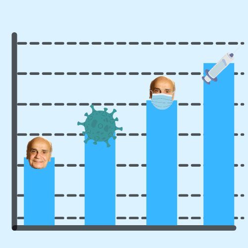

Gráficos
Brasil tem 30 mortes na Enfermagem por Covid-19 e 4 mil profissionais afastados
Na linha de frente ao combate do novo coronavírus, eles já registraram mais de 4,8 mil denúncias por falta de equipamentos de proteção individual para trabalhar